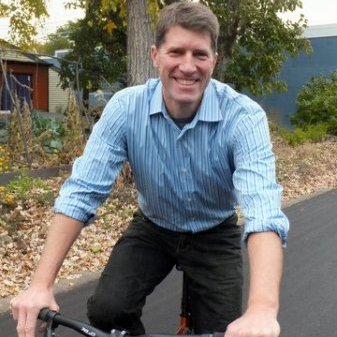

Q&A: As private bike shares flood the US, Minnesota’s shifts its role
by Michael Andersen
September 6, 2017
{kind=link}
A wave of seemingly inevitable change is about to crash into the American bike share industry. One of the country’s oldest bike share systems is hoping to surf it.
Minneapolis-based Nice Ride, an independent nonprofit operator founded in 2009, last week announced a dramatic proposal: with investor-funded for-profit bike sharing startups preparing to pour thousands of shared, dockless bikes into U.S. cities, Nice Ride is proposing to transition out of operating bike sharing itself and instead become a sort of intermediary between private bike-share operators and public agencies.
If the plan moves forward, Nice Ride might become less like a public transit company and more like an agency that owns train tracks and sells access to them.
It’s one of the U.S. industry’s bravest and most interesting approaches to change — and it also raises major questions about equity.
Will this new, privately-financed wave of bike sharing startups be interested in ensuring that the benefits of the public space they use are broadly shared? If companies don’t have any inherent interest in equity, will cities have any power to require attention to it?
And just as importantly: If publicly backed bike share operators were to avoid changing and simply hope everything works out, could they find their social missions swept away if they try and fail to compete with private capital?
Bill Dossett, the founding executive director of Nice Ride and the founding president of the North American Bike Share Association, will field questions about Nice Ride’s request for proposals in Minneapolis on Thursday afternoon. We called him in advance to find out why and how his 35-staffer nonprofit is trying to ride this wave.
(Qs & As edited. Embedded links are ours, not Dossett’s.)

{kind=link}
We love this nonprofit that we’ve created. We headed down the road of a nonprofit business model way back in 2008. The idea was that we could bring together public capital (grants from the federal government) with a major sponsor and capitalize a bike share system and operate it with the revenue from the system and additional sponsorship. The big picture is, that worked. And it not only worked, it helped us create a nonprofit that’s been able to create a lot of other cool stuff.
We’re just out there. We have been to thousands and thousands of events, sometimes three in a day, for eight years. There’s just some real value, some capacity to go out there and lead rides and get people introduced to cycling. So that’s powerful.
It’s hard to think about changing that. But the world’s changed. We really see a lot of power in the dockless model. We look at Beijing, where they went from 5 percent mode share to 11 percent mode share in 12 months. That’s unheard of. That’s never happened anywhere. So it’s great for biking, it’s great for cities. Consumers really like it because the costs are a lot lower and the bikes are at their fingertips. You have both Ofo and Mobike reporting over 25 million trips per day.
[On the other hand] the way it’s rolled out hasn’t had much respect for the right of way at all. It seems like quality’s been really inconsistent, and we’re not sure it has really honored the commitment to equity very well. That doesn’t mean those problems can’t be solved; it means that there are problems and they can be solved.
Do you have reason to believe that any of these startup companies have plans specifically for the Twin Cities?
Our cities and universities are being contacted by multiple startups emulating the Ofo business model. I don’t know how serious any of these inquiries are. One startup has hired employees in Minneapolis.
We had lots of meetings with our board, our employees, our federal funders and private sponsors and our right-of-way owners. They want us to be proactive. I am just trying to figure out what that means.
We just don’t think in the near term we’re going to see capital investment in bike share [by the public sector]. I don’t think that’s a political thing. It’s just about the basic idea that if the private sector’s willing to do it, many people will question whether it’s a good use of public dollars.
So we think that the basic reason for the business model has changed, and we think we should embrace dockless.
The other reason, we think, is that the equipment we currently have is working really well and has a few more years left in it. What we don’t want to do is switch it in a way that would prevent us from being able to fall back on the existing equipment if the dockless doesn’t work out. And there’s lots of ways it could not work out.
Do you have any opinions about whether these private, dockless systems are going to find a profitable business model?
I guess I don’t have a prediction. What I would say is that when we look at shared-use mobility generally, we are going to have lots of services — bike share, e-bike share, car share, autonomous vehicle share, things that we may not even envision now — that are going to consume right of way and exist as apps. So the consumer experience with them will be using an app interface. I think that’s just going to get better and better. And I think how cities manage those things is a brand new field. It’s about working collaboratively and strategically with entrepreneurs in a period of very rapid development.
It’s not really about an entrepreneur’s business model. It’s about both the entrepreneur’s business model and how cities encourage and regulate entrepreneurs who consume the right of way.
What impact do you think this transition would have on equitable access to biking?
I don’t know at this point. I think we’ve learned a ton about how to do bike share in an equitable way from the Better Bike Share Partnership. The core things that seem to be working are having ambassadors, having communications that are really focused on diverse communities, and having subsidized membership options and dealing with the barriers to access. I think those things need to continue, but whether they are part of a nonprofit, part of the city or part of a for-profit I just think needs to be figured out.
We would like to make that subsidy easier. There was a CityLab article back in July that said one of the most common challenges of these programs that try to make bike share more equitable is getting the word out about the subsidy program and helping people figure out how to take advantage of it. So what we’re wondering is if there’s a way the subsidy could be baked in that would make it easier.
Baked in?
Rather than having to go sign up for a separate program – for example, your neighborhood might make you eligible for lower prices. That’s one of the ideas we’re thinking about.
{kind=link}
It seems as if the basic situation is that there’s a public interest in equitable access to bike sharing. Meanwhile, to do business, these private companies need access to the public right of way. So the public can put requirements on companies that use that public space. Is that right?
In cities, the public right of way has great value to lots of entrepreneurs. When the public sector allows entrepreneurs to use it, it should get something in return. Cities have many goals to balance — safety, mobility, vitality, efficiency and equity — and new tools to achieve those goals, including real-time data and dynamic pricing. We think the explosive growth of bike sharing can be a testing ground for how cities can encourage and regulate new technologies and business models strategically to achieve civic goals. Achieving equity goals while allowing privately-funded bike share to flourish is an important part of that.
We have put out this RFP to see what their vision would be. Our vision is that during this transition period, Nice Ride would be involved in brokering that relationship or trying to optimize that relationship.
What do you think will make private companies want to work with Nice Ride on this? What leverage do you have?
I think we’ll find out. I believe that we are in a period where there’s lots of entrepreneurs and lots of smart people being hired and trying new things. We’re a city that was an early experimenter, and we want to continue to experiment. Our right of way owners are coming to the table and our sponsors are interested in talking. I think mainly what we’re offering is the ability to work with a city that wants to be proactive.
You mentioned that the private bike share thing might not work out. What could go wrong?
We have some experience with this in the car share world here in Minneapolis. Minneapolis and St. Paul has had a car share example that’s been successful here, HOURCAR. Then car2go came into town, car2go was here for three years, and then car2go left. There were lots of reasons for their leaving. But we know that the net impact is that we have no car2go. HOURCAR still exists, but it’s been dealt some setbacks by having this extremely well-funded competitor during this time.
Our car share market isn’t where we want it to be, and we don’t want the same thing to happen with bike share. And we know it could. We could have multiple competitors set up shop here, we could lose the green bikes and then those competitors could decide that this isn’t their market they could pull out of here. And that could be pretty awful.
What about the opposite scenario: Certainly there are thousands of people who could benefit from Nice Ride’s services who aren’t currently using them. Is it possible that with a lower price and lots more bikes, the private sector could actually advance equity better than publicly backed bike sharing has?
I think the nonprofit sector could do equity extremely well and I think the for-profit sector could do equity extremely well, and there are examples of that. I think you’re right during this period where there’s been huge venture capital investment, there’s an opportunity. But we’ve also had huge opportunities. And we’ve had some success. There isn’t one formula.
In your vision for the Twin Cities bike sharing system five or seven years from now, does any company have a monopoly?
I don’t know. I think that’s what we need to explore. and I don’t think that it’s that binary. I think you could have a new profession that emerges where you have people who connect right of way managers with entrepreneurs in ways that are best for the consumer.
Michael Andersen is a PeopleForBikes staff writer who produces and manages the PlacesForBikes blog on building for better biking.
The Better Bike Share Partnership is funded by The JPB Foundation as a collaborative between the City of Philadelphia, the Bicycle Coalition of Greater Philadelphia, the National Association of City Transportation Officials (NACTO) and the PeopleForBikes Foundation to build equitable and replicable bike share systems. Follow us on Facebook, Twitter and Instagram or sign up for our weekly newsletter. Story tip? Write stefani@betterbikeshare.org.